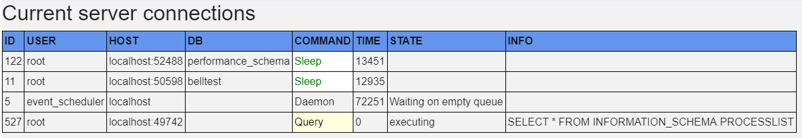
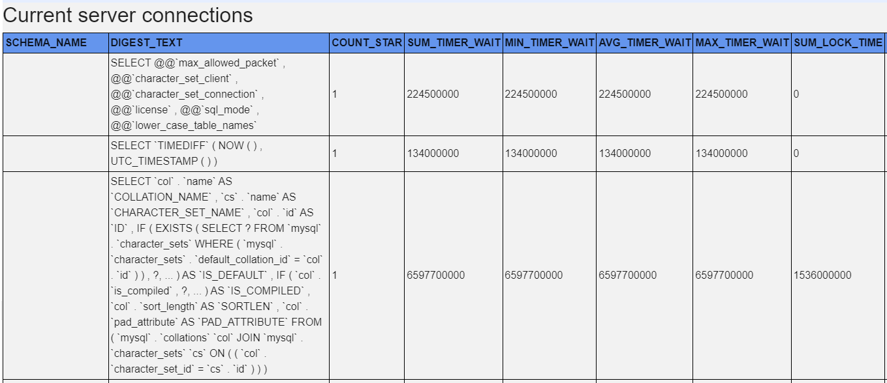
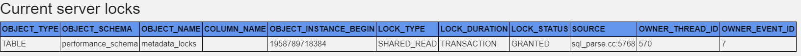
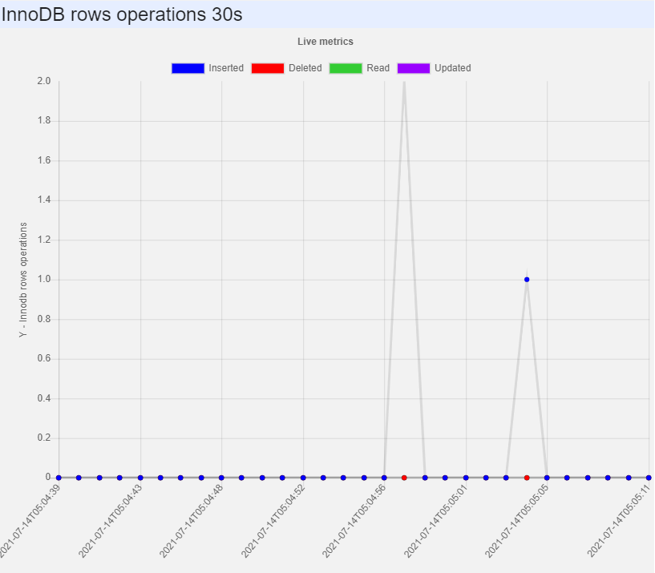
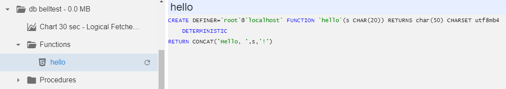
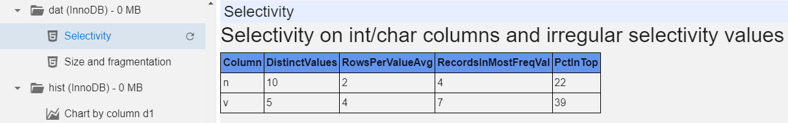
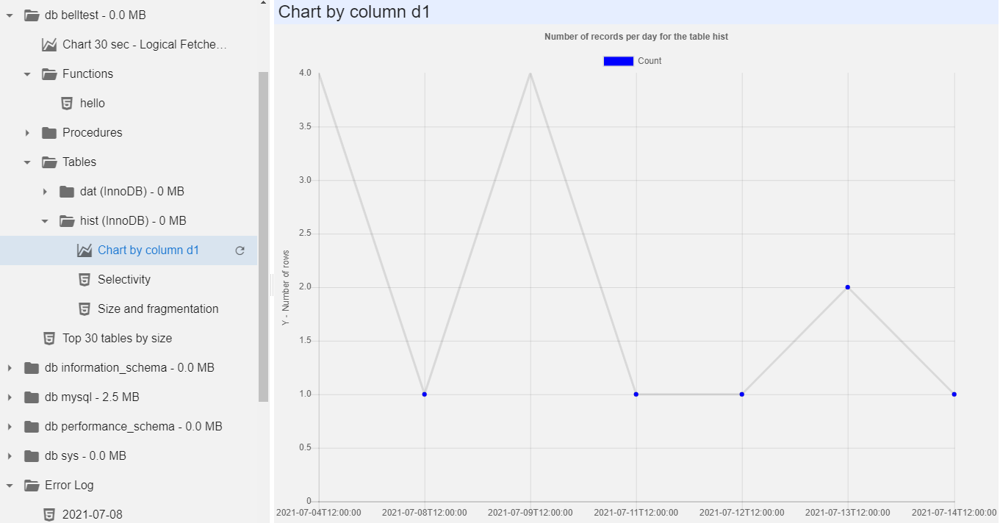
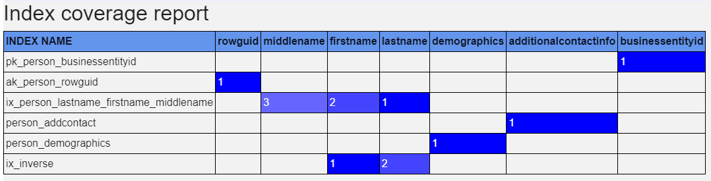
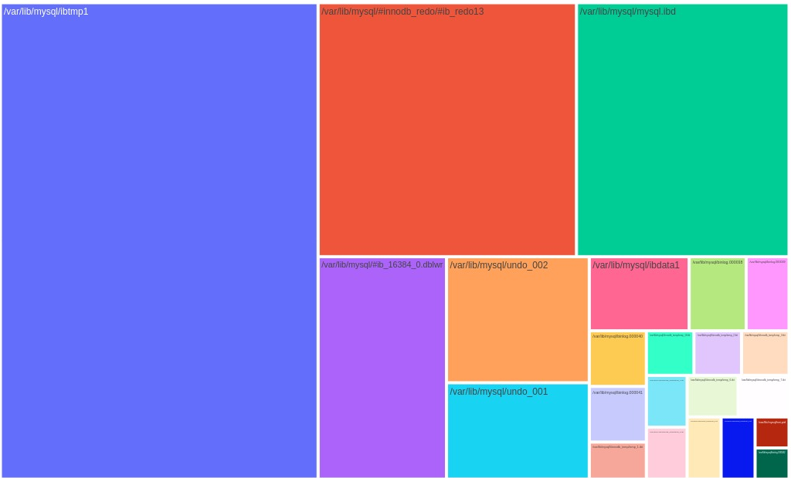

MySQL module
Download the
module and modify ROOT_MYSQLstub.ps1 -
out of the box it lists just the current server. You will probably
want to add more from one of the inventories. When connection strings
contain passwords, it is recommended to write them in the following
format: ###secretname###, and the value for the secret is
stored in config.js file and is not sent to a client (and can not be
debugged using F12-console). Contribute more on Github.
This module exposes a lot of SQL server statistics, metrics, and even
source code. No actual data is exposed, only aggregations. You can add
reports to select data from specific tables, which you consider
technical, so there is no sensitive data inside. All other reports
should be safe. Still, some sensitive data can leak thru queries, for
example, in Activity Monitor in the hardcoded constants of the queries
in WHERE conditions, for example. You can add something like
$v = $v -replace "'([^']{2,})'", "'str'" -replace "[0-9][0-9]+", '999'
to replace all big numeric constants with 999 and 'long strings' with
'str', leaving simple values like =0, =1, ='Y', ='N' intact.
Here is the big picture:
You get a list of databases with their sizes, and at the top level you get a list of server-wide reports:
- Current activity
- Current locks
- Process list
Generate reports about current activity, for example:


You can also build charts on IO and other metrics. They are based on performance_schema cumulative counters, interpreted as deltas during a 30 seconds interval:

You can filter the error log by
day:
You can inspect the contents of MySQL functions and procedures to check that correct version is installed:

And finally, for the tables you can get sizes, fragmentation and selectivity per date (without having access to the fact data, which can be sensitive):


The index coverage report lists all columns, covered by any index at least once. Leading column in an index is marked with '1', second with '2' etc. You can easily spot overindexing and bad indexing.

NEW: TreeMap of reads and writes per InnoDb files (2 separate charts)
NEW: TreeMap of table and index sizes in every database and on
server at whole.
Color represents:
Green - table data
Yellow - indexes